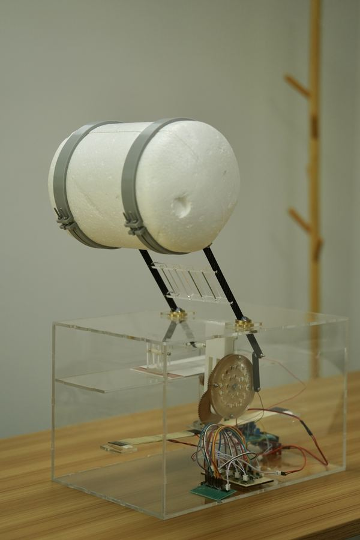
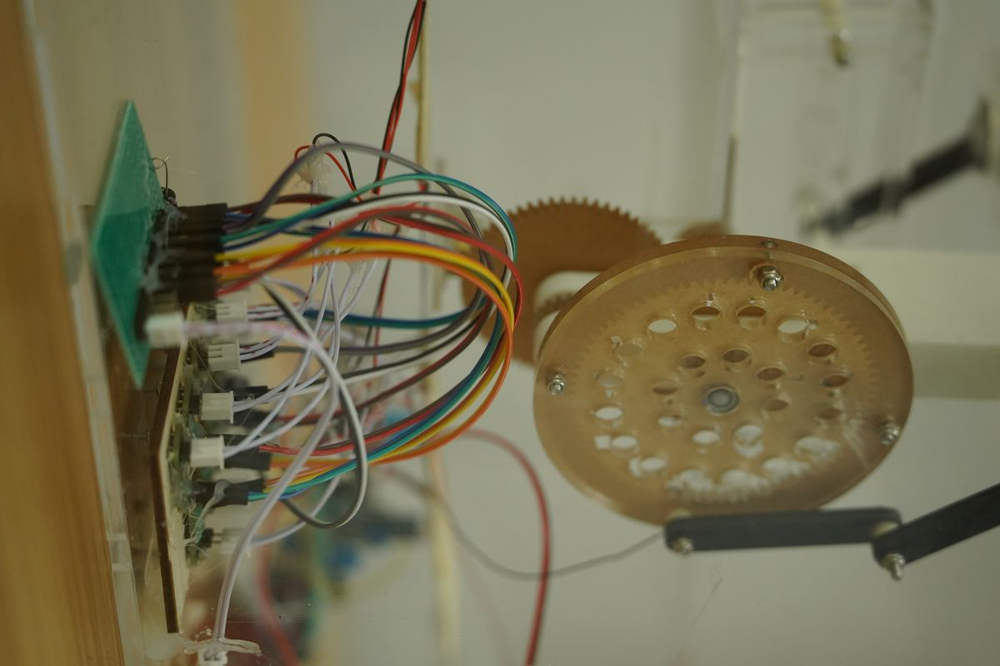

The question
My teammate and I built a prototype to explore whether energy harvested from waves could power coastal warning sensors.
Building and presenting
I led the market research and business planning, designed parts in CAD, and assembled the prototype. My teammate focused on the engineering principles and technical feasibility. We presented the work together at the Conrad Challenge and received a silver medal.
The next experiment
A reviewer suggested putting the device in a wave tank. That would give us a way to observe the prototype under more realistic wave conditions and test its suitability for monitoring.